Mapping lecture
Introduction
Improvements in DNA sequencing technology have led to new opportunities for studying organisms at the genomic and transcriptomic levels . Applications include studies of genomic variation within species and gene identification . In this module we will concentrate on data generated using the Illumina Genome Analyzer II technology, although the techniques you will learn are applicable to other technologies (e . g . 454 GS FLX and ABI SOLiD ) . A single machine can produce around 20 Gigabases of sequence data in a week . This is the equivalent to over 6 human genomes . The data from the Illumina machine comes as relatively short stretches of 35 - 250 base pairs ( bp ) of DNA - around 300 million of them . These individual sequences are called reads . The older capillary sequencing technology generates longer reads of ~ 500 bp, but the approach is much slower and more expensive.
One of the greatest challenges of sequencing a genome is determining how to arrange sequencing reads into chromosomes. This process of determining how the reads fit together by looking for overlaps between them is called genome assembly. Capillary sequencing reads (~500bp) are considered a good length for genome assembly. Genome assembly using sequence reads of <100bp is more complicated due to the high frequency of repeats longer than the read length. Assemblies for bacterial genomes can comprise of at least 50 pieces (called “contigs”), whilst for Eukaryotes more than 1000 pieces is common. Therefore new sequencing technologies are applied predominantly where a reference genome already exists. A reference genome is a well assembled genome from the same or a similar organism that is ungoing sequencing. Sequencing a genome with new technology when there is an existing reference is called re-sequencing.
In this practical, we will focus on mapping reads to a reference genome, and visualising the resulting alignments using Tablet.
Sequencing/Mapping workflow
The diagram below describes the workflows for genomic resequencing and RNA sequencing. We will cover the in silico (computational) aspects of these workflows.
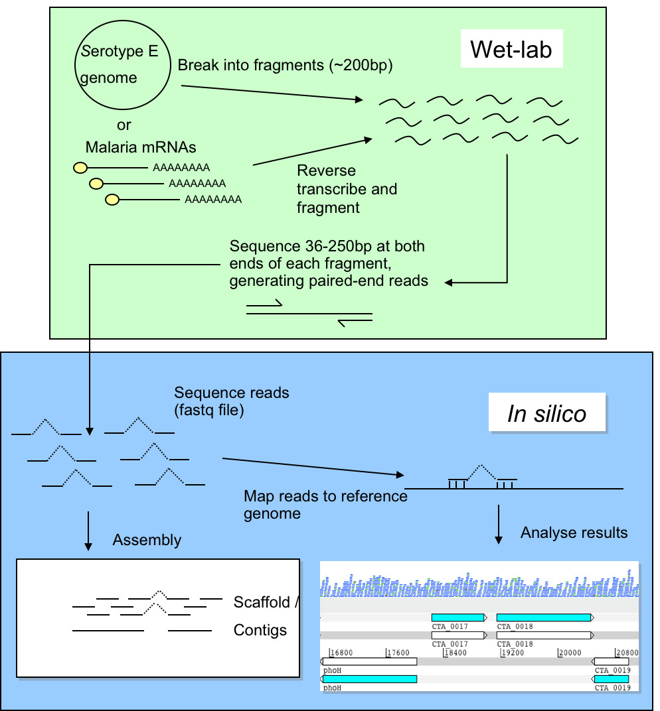When resequencing, instead of assembling the reads to produce a new genome sequence and then comparing the two genome sequences, we map the new sequence data to the reference genome. We can then identify Single Nucleotide Polymorphisms (SNPs), insertions and deletions (indels) and Copy Number Variants (CNVs) between two similar organisms.
The first example we use here is a reference genome for Plasmodium falciparum (3D7 clone, size 23Mb, 81% AT content) (Gardener et al., 2002). This parasite is the causative agent of malaria. Malaria is widespread in tropical and subtropical regions, including parts of the Americas, Asia, and Africa. Each year, there are approximately 350–500 million cases of malaria, killing between one and three million people, the majority of whom are young children in sub-Saharan Africa. Recently we sequenced two laboratory strains, IT and DD2, using 76 bp paired end read technology. The second example is using the reference genome for Mycobacterium tuberculosis (H37Rv, size 4.4Mb, GC content 65.6%) (Cole et al, 1998). This bacterium causes tuberculosis disease.
Rather than attempt to assemble these very short reads into a whole new genome, we will map these reads against the existing genome assembly ofP. falcipraum 3D7 orM. tuberculosis H37Rv. Furthermore, we will identify differences between the genomes of the three clones, find mutations and CNVs associated to drug resistance, whilst determining how the reads fit together.
Here is the general workflow of mapping:
The paired end reads (F – forward; R - reverse) are mapped against the reference. Different tools can be used for that. The results can be transformed with samtools to an ordered and indexed bam file. Those bam files can be read into programs like Artemis to visualize the alignments of the short sequences. From the bam file it is possible to call variants. The output format is BCF or VCF. VCF can be loaded easily into excel like tools.
Quality control of the reads is always important, to correct for any GC content biases, possible contamination and read quality.
conda environment for this practical by typing the following:
conda activate mapping. This environment contains most of the software we need for this practical.
This command needs to be run each time we open up a new terminal or switch from a different environment.
File formats
You have the P. falciparum 3D7 clone reference file (Pf3D7_05.fasta). This contains the assembled sequence of the 3D7 genome. You also have two files of sequence reads from the IT clone (IT.Chr5_1.fastq.gz and IT.Chr5_2.fastq.gz). Look in both the reference file and the read files.
FASTA format
In the terminal navigate to the data/malaria directory, by typing:
cd ~/data/malaria/
head -n 5 Pf3D7_05.fastaHover over the output below to get an explanation
FASTQ format
Now type the commands below to see what FASTQ format looks like.
zcat IT.Chr5_1.fastq.gz | head -n 12Quality Control
Prior to the analysis of these sequences, it is highly advisable to perform quality control checks and filtering in order to minimise artefacts in reads including base calling errors, poor quality reads or primer contamination. The difference in passing filtered data to downstream programs can be night-and-day for processes like de novo assembly or SNP calling.
FastQC is a tool written in Java to perform quality control checks on raw sequence data. It computes several statistics and shows the results on summary graphs and tables. We will analyse several datasets in order to check whether the samples look good or, on the contrary, they require further filtering.
Open up a new terminal window and then type: fastqc
Once the program is running, select File > Open to open one or more Sequence files (see below). Browse to ~/data/tb/ to choose sample1_1.fastq and click OK.
FastQC supports FASTQ files (all quality encoding variants), GZip compressed FastQ and alignment files (SAM and BAM formats)
Newly opened files will be immediately processed. Because of the size of FASTQ files it can take a couple of minutes to open them
FastQC performs several analyses, described in modules on left hand side of the main window (see below). Note that these results should be taken as guidance in the context of our library and never as pass/fail results. Nevertheless, they will highlight major problematic aspects. Let us now interpret the output of some of the modules.
Normal results are marked with green ticks, slightly abnormal with orange exclamation marks and very unusual with red crosses
The Basic Statistics module provides overall information such as the total number of reads, read length and %GC content.
This view shows the quality values (y-axis) along the read at each nucleotide position (x-axis). The greater this value, the lower the probability that the corresponding base call is incorrect. At each position a Box-Whisker plot is drawn where the central read line is the median; the yellow box represents the inter-quartile range (25-75%); the upper and lower whiskers the 10% and 90% points; and the blue line correspond to the mean quality. This analysis computes the mean quality of each read and then displays for all observed values the number of reads having such quality. It is expected that a small subset will have universally poor quality. FastQC outputs a warning if the most frequently observed mean is below 27 (corresponding to a 0.2% error rate) and a failure if is below 20 (1% error rate).
This graph will only appear in your analysis results if you're using an Illumina library which retains its original sequence identifiers. Encoded in these is the flowcell tile from which each read came. The graph allows you to look at the quality scores from each tile across all of your bases to see if there was a loss in quality associated with only one part of the flowcell.
The plot shows the deviation from the average quality for each tile. The colours are on a cold to hot scale, with cold colours being positions where the quality was at or above the average for that base in the run, and hotter colours indicate that a tile had worse qualities than other tiles for that base. In the example below you can see that certain tiles show consistently poor quality. A good plot should be blue all over.
This module outputs the percentage of N base calls at each position. N is usually called when the sequencer is not confident enough to call a conventional base (A, T, C or G). Small proportion of Ns may appear especially towards the last positions.
Current sequencers frequently produce reads of uniform length. Nevertheless, if reads are trimmed due to quality issues we will observe variable read lengths.
This module computes the degree of duplication of every read in the file by looking for exact matches over the whole length of the rest of reads. A dataset with high depth of coverage, namely an over-represented target genome, will report higher duplication levels than one would expect since multiple reads starting at the same position will be found by chance.
In a normal library, every individual sequence will make up a tiny fraction of the whole set. Therefore, overrepresented reads may be indicators of biologically significant sequences or contaminants. All reads representing more than 0.1% of the total amount will be listed. Primers and adaptors are the most common sources of contamination.
At this point you should be able to open sequence files with FastQC and interpret the quality plots described. First, open sample IT.Chr5_1.fastq in ~/data/malaria/. Second, open sample1_1.fastq, sample2_1.fastq and sample3_1.fastq in ~/data/tb/.
Questions:
- Can you spot any quality issue with the reads we should be worried about?
- If so, what may be their source?
Saving a report
We can keep a record of the FastQC results. To create a report simply select File > Save Report from the main menu. This will create a folder containing the images from the analyses, an HTML version of module results and text files containing results numeric data.
Further information
You may find useful the information in the following links:
- 1. http://www.bioinformatics.babraham.ac.uk/projects/fastqc/
- 2. http://bioinfo-core.org/index.php/9th_Discussion-28_October_2010
- 3. http://www.youtube.com/watch?v=bz93ReOv87Y (FastQC video tutorial)
We have used the FastQC tool to identify problems in raw sequence data. Nevertheless, bad quality issues in our data are not a death sentence for the experiment; it can still be useful for downstream analyses if we applied the right filtering before processing. In general, the problem in the sequence files is the degradation in quality of bases at end of the reads, leading to the need to hard clip or trim them.
Trimming Illumina paired-end reads using Trimmomatic
| Parameter | Description |
|---|---|
| ILLUMINACLIP | Cut adapter and other illumina specific sequences from the read |
| SLIDINGWINDOW | Performs a sliding window trimming approach. It starts scanning at the 5" end and clips the read once the average quality within the window falls below a threshold |
| MAXINFO | An adaptive quality trimmer which balances read length and error rate to maximise the value of each read |
| LEADING | Cut bases off the start of a read, if below a threshold quality |
| TRAILING | Cut bases off the end of a read, if below a threshold quality |
| CROP | Cut the read to a specified length by removing bases from the end |
| HEADCROP | Cut the specified number of bases from the start of the read |
| MINLEN | Drop the read if it is below a specified length |
| AVGQUAL | Drop the read if the average quality is below the specified level |
| TOPHRED33 | Convert quality scores to Phred-33 |
| TOPHRED64 | Convert quality scores to Phred-64 |
Try to understand what the following command line specifies by looking at the Trimmomatic parameters in the previous table, and run it for sample1.
cd ~/data/tb/
trimmomatic PE sample1_1.fastq.gz sample1_2.fastq.gz -baseout sample1 LEADING:3 TRAILING:3 SLIDINGWINDOW:4:20 MINLEN:36Alignment of short reads
Current popular alignment tools are summarised in Li & Homer (2010). As shown in column 5 in the Table below, most of them allow gaps in alignments. Effective gapped aligners avoid calling false SNPs predicted due to the presence of insertions and deletions (indels). Furthermore, software including paired-end information are capable of mapping repeat reads with uniquely mapped mates; they also correct alignment errors that are inconsistent with the constraints imposed by mate pairs in terms of distance and orientation. Base quality in reads has also been exploited by programs like MAQ improving alignment accuracy.
All aforementioned programs output both aligned and unaligned reads in Sequence Alignment/Map (SAM) format (H. Li et al. 2009), a standardised format widely supported by downstream bioinformatic tools (e.g. variant callers, alignment viewers). The development and improvement of efficient short-read alignment algorithms has made the fast processing of data produced by current sequencing platforms feasible which, initially, entailed a bottleneck in the analysis of such high-coverage sequence dataset.
Sequence alignment Exercise 1
Open up a new terminal window and type bwa
All available BWA commands will appear on the terminal screen as shown below.
In order to map our paired-end reads we will use ‘index’ and ‘mem’ commands. The ‘index’ command takes the reference genome (the database) in FASTA format as input and indexes it, which typically will take a few hours. This command only needs to be executed once for a particular reference genome
To see all options for the ‘index’ command type:
Most options will be set automatically according to the data we are running it on so we do not have to worry about setting them.
Type the following line:
bwa index ~/data/tb/tb.fastaSeveral aligning algorithms are implemented in BWA. We will be using the BWA-MEM, which is the latest and generally recommended for high-quality queries as it is faster and more accurate. To see which parameters can be tuned for the ‘mem’ command type: bwa mem
We will be using the trimmed files output (from applying trimmomatic) as input for BWA:
cd ~/data/tb/
bwa mem -c 100 -R "@RG\tID:sample1\tSM:sample1\tPL:Illumina" -M -T 50 ~/data/tb/tb.fasta sample1_1P sample1_2P | samtools view -b - | samtools sort -o sample1.bam -
samtools index sample1.bam
The previous commands transformed SAM files into binary format, sorted the reads by occurrence against the reference, and then indexed the bam files. At this point, we can use the ‘flagstat’ samtools command to print summary statistics from indexed bam files:
samtools flagstat sample1.bamThe 'flagstat' output should look like this:
Where each line specifies:
- Total number of reads;
- Duplicates
- Number of mapped reads;
- Paired reads in sequencing
- Number of forward reads;
- Number of reverse reads
- Number of properly mapped reads (same chromosome, opposite orientation, and within few deviations from the expected insert size);
- Number of reads mapped along with their mates (7 is a subset of 8).
- Singletons: number of reads mapped alone, i.e. mate not mapped (8+9=3).
- Reads whose mates are mapped to a different chromosome.
- Reads whose mates are mapped to a different chromosome with mapping quality greater than 5; note, (11) is a subset of (10).
Finally lets also remove some temporary files we no longer need. Trimming has produced some files which are unzipped and take up a lot of space. Let's remove these using:
rm sample1_1P sample1_1U sample1_2P sample1_2UViewing the alignment
Launch tablet by running the command tablet on a New Terminal. Click under the Home tab in the Top Bar Open assembly. Fill in all required fields including Primary Assembly file and Reference/Consensus file. You can use the Browse… buttons to navigate and select the ~/data/tb/sample1.bam and ~/data/tb/tb.fasta files respectively.
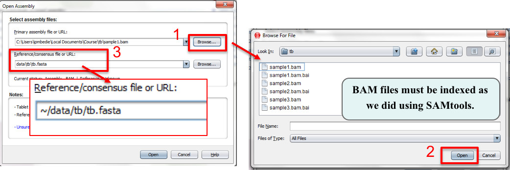Make sure you click on the Chromosome you want to work on in the left panel to show the reads. Now, let us load the feature track showing gene coordinates and names using the Import features button in the Home tab. Once the dialog opens navigate to ~/data/tb/ and select the file called tb.gff.
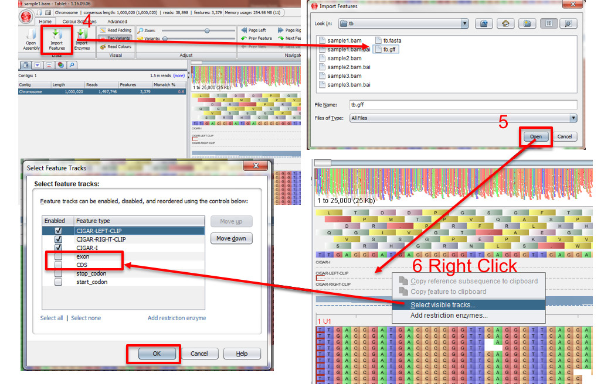If the annotation tracks do not display in below the sequence. Press right click in the tracks below the DNA sequence and press Select visible tracks… and then select exon and CDS and click OK.
Tablet will display one alignment per window, so if more samples need to be viewed, open a new terminal and type tablet and follow the steps described earlier with another sample.
Tablet loads and can display up to 25,000 bp at a time as default, delimited by the Overview window (1). This can be changed using the Window Size button in the Advanced tab. The blue semi-transparent square defines the region that is being displayed in the Read panel (2). To navigate through the chromosome you will need to use the bar on top by dragging it. To navigate through the 25 Kb loaded you can click and drag the Read panel or use the buttons on the Top Bar. Note that the red numbers in each corner of the Read panel will display the region currently being shown (Blue squares).
Zooming into the sequence can be done using the Zoom button in the Top bar.
It is possible to change the Overview display to show a Coverage plot by using the Coverage button under the Advanced tab.
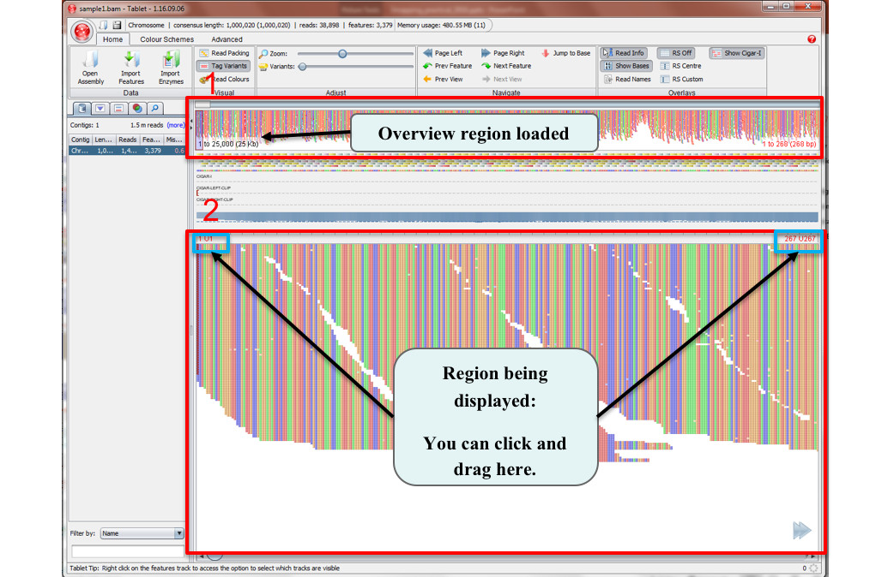For paired-end alignments, the best way is to display the paired reads is by changing the Read Packing option to Packed (Paired end).You are encouraged to investigate the differences on the visualization caused by different read packing options.
The way Tablet allows you to navigate through your reads is combining different colour coding for your reads and showing information about individual reads (and their mate reads) when hovering with your mouse over them.
You will find the colouring key under the Colour Schemes tab in the Top Bar. When hovering over them it will show an explanation of how the colour code works.
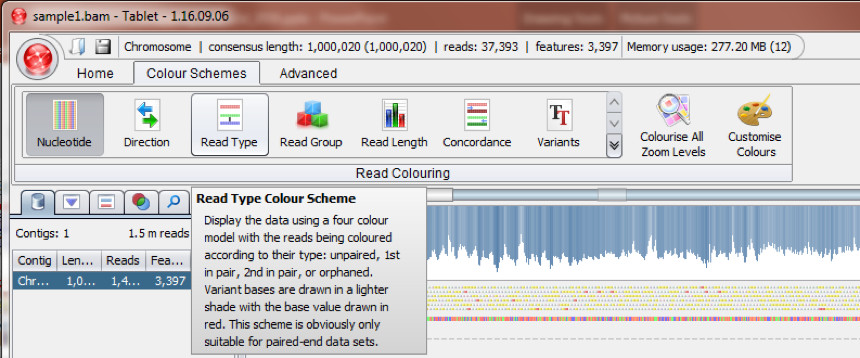The most useful options you will find are the Read Type option, to discover reads where the mate pair has not been mapped and the Direction option to discover reads where the two mate pairs are oriented in the same direction. Note that as paired reads they should always map one Forward and the other Reverse. You can read the other options by hovering over the buttons.
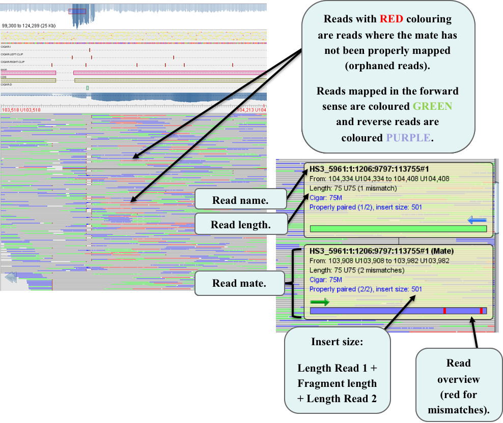Tablet displays individual information about the read and its mate pair when the mouse is hovered over them. This can help us identify interesting reads.
At higher resolutions, read bases that do not match the reference are colour coded with a lighter colour shade than the original bases. The contrast between the reference bases and those that are different can be adjusted using the Variants bar in the Top Bar under the “Home”. In addition, the Variants option under the Colour Scheme tab can be used to show the variants and make their visualization more easy.
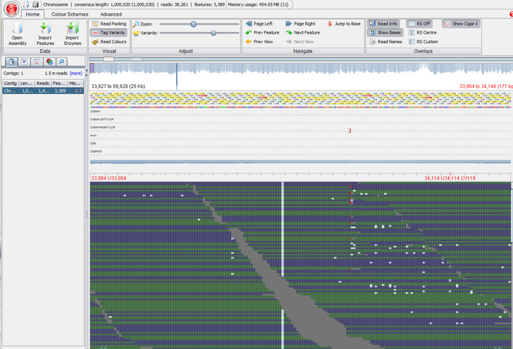To outline a read and its paired mate, right click on it and then click Outline > Read then right click on it again and press Jump to > Read’s mate. This will move you to the position of the mate read and then you can repeat the Outline step. A black outline will appear once you do this, and it can be a good way to track long reads or highlight interesting reads.
Another feature from Tablet is the possibility to get the read name copied to your clipboard or the whole information about the read (e.g. name, sequence and quality) in order to further investigate interesting reads. To try this click on the Copy read name to clipboard or Copy read data to clipboard from this same right click menu from a read, then open a plain text file and copy the results.
Exercise: Mapping the P. falciparum IT reads with BWA
First we need to index the reference (the algorithm needs to access specific positions in the reference in an efficient way).
cd ~/data/malaria/
bwa index ~/data/malaria/Pf3D7_05.fasta
Next, read files (both forward/reverse) are mapped against the reference
bwa mem ~/data/malaria/Pf3D7_05.fasta ~/data/malaria/IT.Chr5_1.fastq.gz ~/data/malaria/IT.Chr5_2.fastq.gz | samtools view -b - | samtools sort -o IT.Chr5.bam -The details of where each IT clone read has been mapped is now stored in the file IT.Chr5.bam. We are going to view the mapped reads in Artemis using Artemis BAM view. Before we can proceed, however, we must index the BAM file to allow programs suchh as Artemis quick access to different sections of the file.
samtools index IT.Chr5.bamBefore we visualize the alignment of the reads in a Artemis, let us have a look at the sam/bam format. SAMTOOLS was developed to have a standard format to store reads. It contains information about the reference sequence, where a read is mapped, quality of mapping, and where it’s mate is mapped. Files ending with .sam, are normally plain text, but as they might take too much space, the file is compressed into a bam file. All visualization tools will need the bam file. It has to be sorted (by chromosome and position) and indexed. Indexing enables the fast processing of alignments.
Here is an example of a read and its mate. We need to use samtools to convert to SAM format and then grep to look for a specific read:
samtools view IT.Chr5.bam | grep "IL39_6014:8:61:7451:18170"
Viewing the mapped reads in Artemis
We will now examine the read mapping in Artemis using the BAM view feature.
Open Artemis by typing art on your command line. Select File -> Open...
and load Pf3D7_05.embl from
the ~/data/malaria/ data directory. This contains exactly the same sequence as
From the Artemis File menu, select Read BAM / CRAM /VCF, then locate the file IT.Chr5.bam from ~/data/malaria/ directory.
You should see the BAM window appear as in the screen shot below. We want to change the view in order to better see how the reads map to the genome.
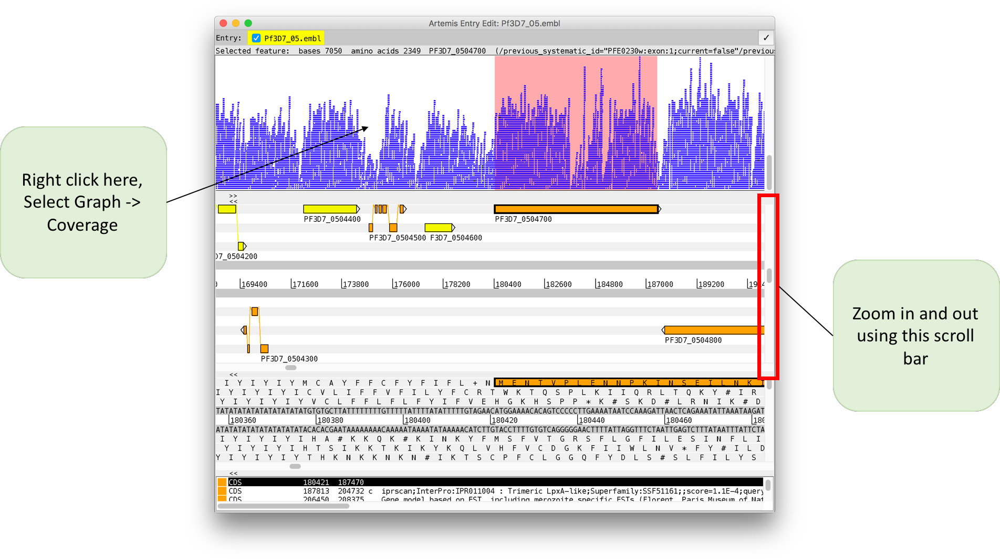Use the Go to button in the menu and select Navigator, select the Go to Feature With Gene Name and type the name: PF3D7_0504700 then zoom out once.
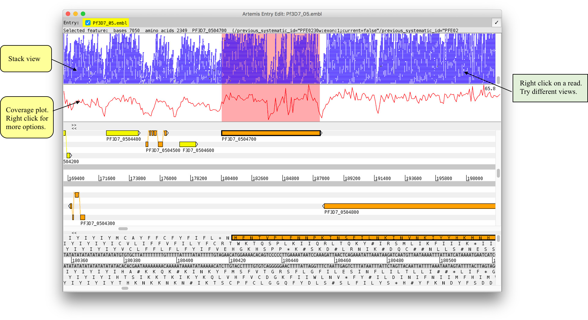Each view has its advantages:
- Inferred Size: (click also Use log scale) displays the mate pair on the y-axis depending their distance. In this case, some reads map further apart compared to others. Could this be a deletion?
- Strand Stack: displays the strand where reads are mapping. This is useful for strand specific applications.
- Paired Stack: can be useful to visualise connected regions.
Zoom in and position the mouse over a read until a window pops up. Then right click on the read and select Show details of…
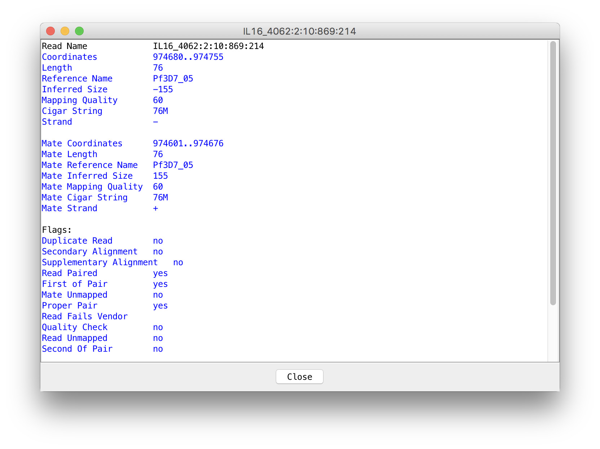These two windows provide information on the mapping of the reads, as it is stored in the bam file. Notice the Mapping quality. The maximum value for this is 60. The mapping quality depends on the accuracy of the sequence read and the number of mismatches with the reference. A value of 0 means that the read maps equally well to at least one other location and therefore is unreliably mapped. The flags describe the read’s mate pair mapping. Most of those values can be filtered, to do so, right click in the BAM track and select the Filter Reads... option.
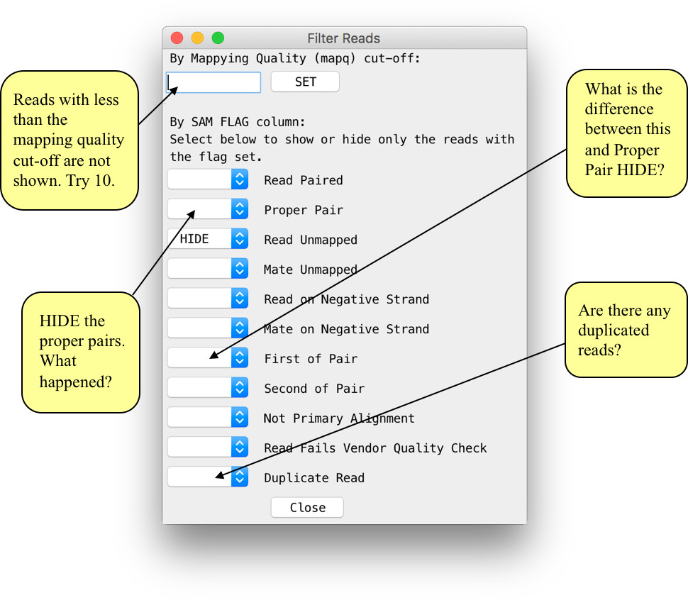Differences in read coverage between reference and resequenced genomes
It is thought that a duplication in the mdr1 gene of P. falciparum is associated with drug resistance against the antimalarial mefloquine and that it may also modulate susceptibility to chloroquine, another antimalarial drug. For more information have a look in PubMed, e.g. at Borges et al. (2011) [PMID: 21709099] or at Mungthin et al. (2010) [PMID: 20449753]
Once Artemis has started running on your screen navigate to the mdr1 gene locus using e.g. the Navigator (Goto –> Navigator… –> Goto Feature With Gene Name).
The Dd2 clone is known to be chloroquine resistant. Add its mapped reads (a file already prepared before the course) by right-clicking on the BAMview and choosing Add BAM/CRAM .... Select the file DD2.Chr5.bam
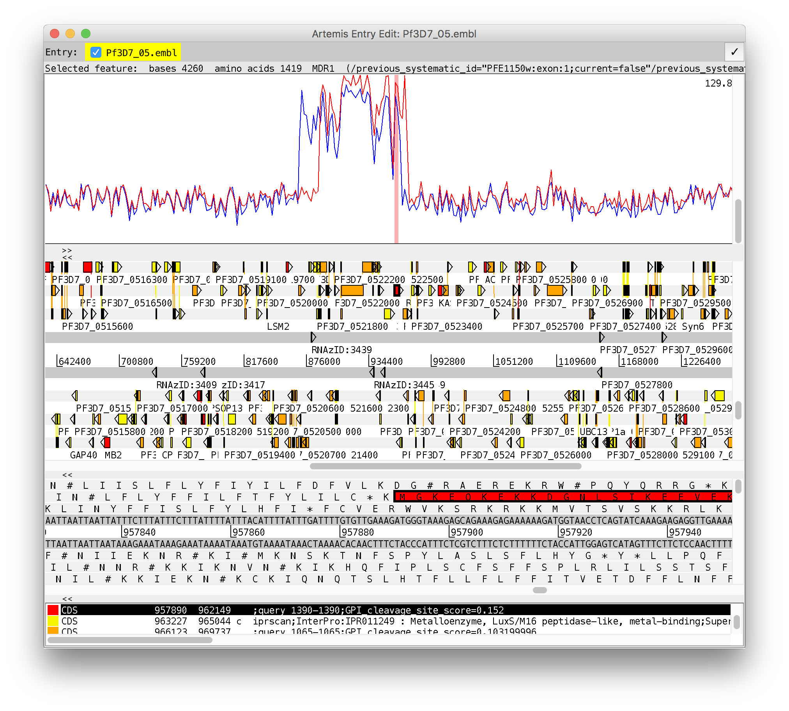Identifying Single Nucleotide Polymorphisms
Let us have a look at SNPs now. To do so, zoom in on the mdr1 gene and make sure you are in Strand Stack view and have Show SNP marks selected. As mentioned before, in addition to true SNPs some differences between the reference sequence and the mapped reads are due to sequencing errors. On average, 1 in every 100 bases in the reads is expected to be incorrect. In particular, some sequencing errors may be due to a systematic problem as illustrated below.
Red marks appear on the stacked reads highlighting every base in a read which does not match to the reference. If you zoom in you can distinguish real SNPs as vertical red lines, while the random sequencing errors are more disperse.
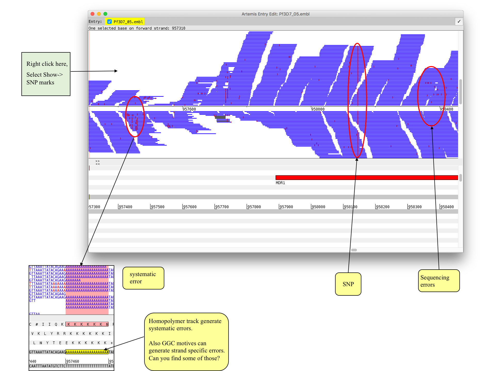To answer the just posed, right-click on the gene annotation of the mdr1 gene and then choose View – Amino Acids Of Selection: here you can see which amino acids are normally coded for around amino acid position 86. Note also that AAT codes for Asn (N) and TAT codes for Tyr (Y).

Now you have separeated the different BAM files you can easily compare the two isolates.
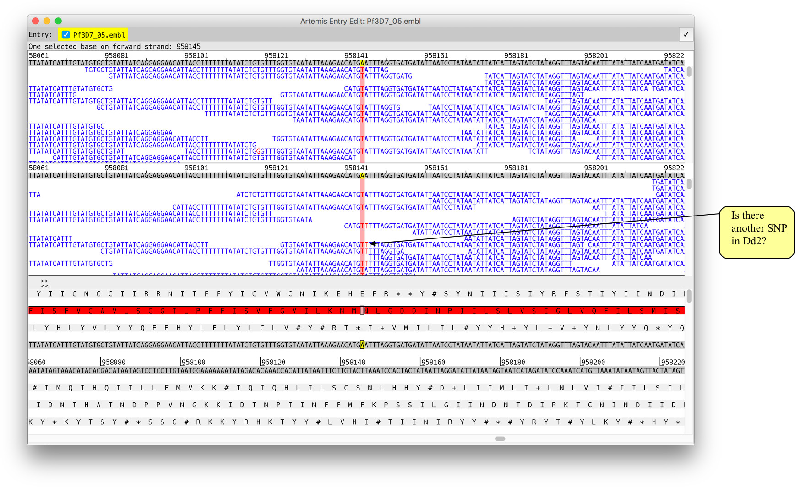Important aspects of the mapping procedure
Non-unique/repeat regions
A sequence read may map equally well to multiple locations in the reference genome. In such cases it is
unclear where the read should be placed. Different mapping algorithms have alternative strategies for this
problem. Maq will randomly report only one of the mapping locations and give the read a score of 0.
GC content
Some organisms have genomes with extreme GC content. The Plasmodium genome, for instance, is 19% GC,
meaning 81% of bases are A or T. The result of this is that reads are more likely to map by chance to
multiple locations in the genome, when compared to a genome with neutral GC content (e.g. 40-60% GC).
Insert size
When mapping paired reads, the mapping algorithm (e.g. Maq) takes the expected insert (e.g. sequenced
DNA fragment) size into account. If the fragments are expected to be, on average 400bp and the sequence
reads are 150bp, then the paired reads should be ~100bp apart. If the paired reads are significantly
further apart then we can say that the reads do not map reliably and discard them. This information can
assist with improving the reliability of mapping.
Tips
It is always a good idea to try different programs for any particular problem in computational biology.
If they all produce the same answer you can be more certain it is correct. Alternative short read mappers
include SOAP (Li et al., 2008b), Ssaha (Ning et al., 2001), MAQ (Li et al., 2008), Bowtie(2)
(Langmead et al, 2009, 2012) and SMALT. As seen, TopHat (Trapnell et al., 2009) is particularly useful for
RNAseq mapping as it supports spliced mapping. New tools for mapping sequence reads are continually being
developed. This reflects improvements in mapping technology but it is also due to changes in the sequence
data to be mapped. The sequencing machines we are using now (e.g. Illumina Genome Analyzer II, HiSeq2000/2500,
454 GS FLX etc) will not be the ones we are using in a few years time and the data the new machines produce
are likely to be sub-optimally mapped with current tools.
Extra Exercise: Identifying essential genes in a TraDIS analysis
When essential genes are disrupted by the presence of the transposon, the affected bacteria will not grow. Therefore, genes with no detectable transposon insertions are likely essential. The exact likelihood of this observation is dependent on the initial mutant library size versus genome size, that is, the transposon coverage throughout the genome. The essentiality of the gene is dependent of the growth conditions of the mutants, allowing for the detection of condition specific gene essentiality.
We will be using selected data from a recent TraDIS screen of Burkholderia pseudomallei (2 circular chromosomes, 6,332 predicted coding sequences within 7.25 Mb). B. pseudomallei is the causative agent of melioidosis, an often fatal infectious disease for which there is no vaccine. B. pseudomallei is listed as a Tier 1 select agent, and current therapeutic options are severely limited due to a natural resistance to many antibiotics. We will focus on reads from chromosome 1. The analysis goes through several steps, culminating with viewing the mapped regions using Tablet to assess the evidence that loci are essential.
The transposon sequence is identifiable, but it is not part of the reference genome. Furthermore, not all sequenced reads will have the transposon in them. Prior to mapping, the sequences should thus be filtered and the transposon sequences removed. We have already run a script on the data that removes the reads that did not have the transposon signature sequence. The number of lines in the post QC file can be calculated by typing:
zcat TraDIS_reads_chr1.fastq.gz | wc -lCan you determine what the transposon sequence is? hint: view the reads with
zcat TraDIS_reads_chr1.fastq.gz | lessRemember to hit q to exit less!
We are now going to run a Perl script to remove the transposon sequence from the reads and create a new fastq file (TraDIS_reads_chr1.filt.fq.gz)
perl remove_transposon_and_filter_FASTQ.pl ~/data/tradis/TraDIS_reads_chr1.fastq.gz 0 | gzip -c > TraDIS_reads_chr1.filt.fq.gz Mapping reads using Bowtie to detect genomic insertion sites
The filtered TraDIS_reads_chr1.fq file of the previous step can now be mapped back to the reference genome (Bp.genome.fa). For this step we are going to use Bowtie (Langmead et al 2010, bowtie-bio.sf.net).
Type bowtie to see all the bowtie options, including those below:
We need to produce a BAM file. Now we will perform the mapping, by typing:
bowtie-build Bp.genome.fa Bp.genome.fa
bowtie -y -a -v 0 -S Bp.genome.fa -q TraDIS_reads_chr1.filt.fq.gz 2> TraDIS_reads_chr1.bowtieLog.txt | samtools view -b - | samtools sort -o TraDIS_reads_chr1.bam -
samtools index TraDIS_reads_chr1.bam
How many mismatches are we allowing? The file is in SAM format and needs to be indexed and converted to BAM using the above commands.
Visualizing the results in Tablet
Tablet supports the input of indexed BAM files directly. As opposed to the previous examples, no insertions or deletions should be found in this dataset (single-end reads) and no mismatches/SNPs (because we are requiring perfect matches when mapping). Read in the following files into Tablet:
- Bp.genome.fa (reference in ~/data/tradis/)
- Bp.genome.gff (annotation in ~/data/tradis/)
- TraDIS_reads_chr1.bam (sorted BAM in ~/data/tradis/)
samtools view -b TraDIS_reads_chr1.bam chr1:90207-90668 | samtools flagstat -| Chromosome | Gene name | Start | End | No. reads | Essential (Yes/No) |
|---|---|---|---|---|---|
| Chr1 | BPSL0079 | 90207 | 90668 | ||
| Ch1 | BPSL0590 | 654016 | 660111 | ||
| Chr1 | BPSL0764 | 881805 | 886049 | ||
| Chr1 | BPSL1661 | 1925148 | 1934837 | ||
| Chr1 | BPSL1712 | 1998620 | 2017444 | ||
| Chr1 | BPSL2990 | 3563128 | 3563709 |
- Assess the quality of raw sequence data
- Perform read trimming to remove low quality bases
- Map reads to a reference genome using BWA
Next up you will learn how to use the alignment you have generated to call variants.
Acknowledgements: Thomas Otto, Brendan Wren, Wellcome Trust